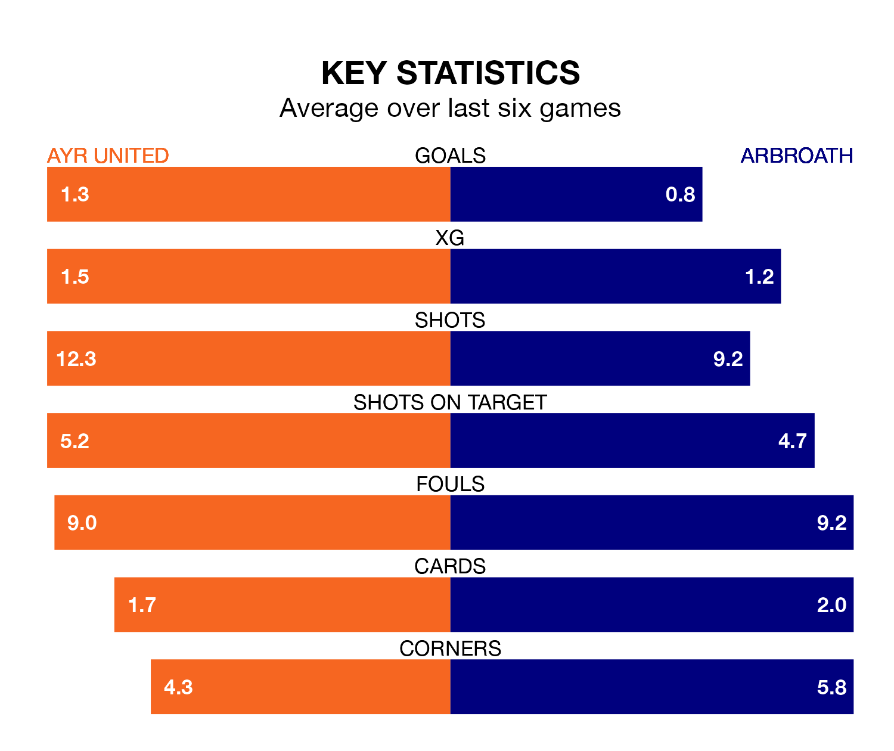

Tuesday's late match at Somerset Park sees two relegation candidates play each other, as eighth-ranked Ayr United host bottom of the table Arbroath.
Ayr have picked up 20 points from their first 20 Championship games, with five wins and five draws.
That is two points more than Arbroath have collected, having won five and drawn three.
In the last 10 years, Ayr and Arbroath have played each other on 21 occasions. Ayr won six of them, Arbroath eight, and they drew seven times.
On average, the Honest Men scored 1.2 goals and Arbroath 1.3 in those matches.
Their last meeting was on January 13, when they played out a 0-0 draw.
With 23 goals in 20 games so far this season, Arbroath are the league's joint-third-lowest scorers with 1.1 goals per game. And they are conceding more than average, letting in 40 goals at a rate of 2.0 per game.
Ayr are also below average scorers, with 1.2 goals per game, compared to a league average of 1.4. They have conceded 1.9 goals per game.
United are in disappointing form in the Championship, with one win and three draws from their last six games.
And also with a win and three draws over that period, the visitors' form is identical – they have both taken six points from 18.
The Honest Men's Jamie Murphy is among the league's most creative players, racking up eight assists in 16 appearances so far this season, and holding third spot in the Championship's assist charts.
For Arbroath, Scott Stewart has set up the most goals, having laid on three assists in 20 games.
Ayr's last match was on January 13, a 0-0 draw against Arbroath.
Arbroath drew 0-0 with Ayr United last time out, also on January 13.
Updated: 14:53 (UTC), 16/01/24